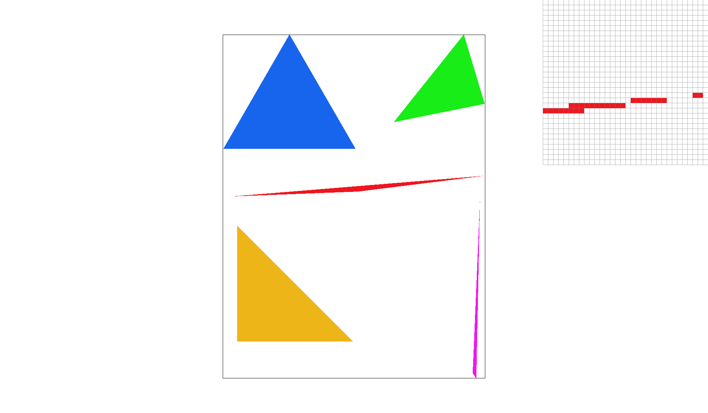
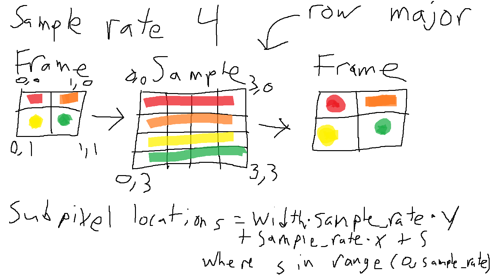
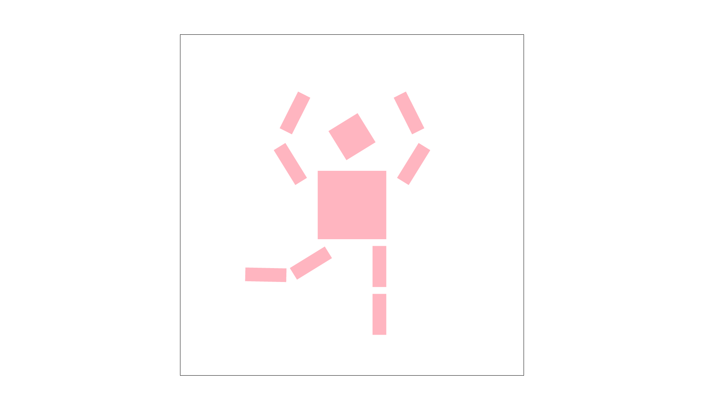
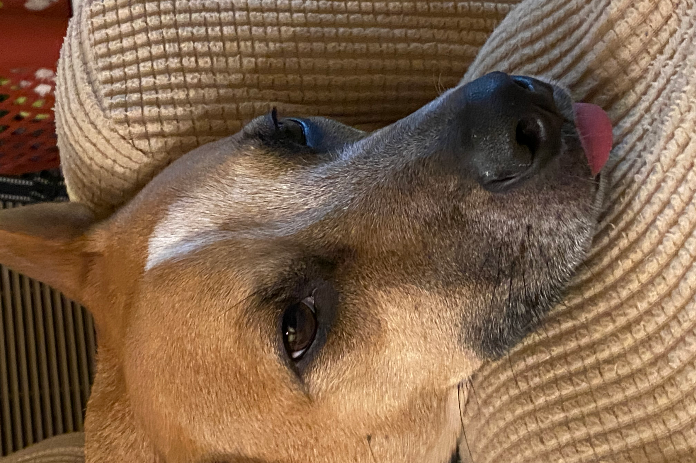

Overview
In this assignment, we implemented rasterizer functions to display images. The main goal was to implement techniques and algorithms to reduce aliasing and generate clean images. We utilized supersampling, different methods of pixel sampling, and different methods of level sampling. Through out the project, we learned the granular details on how each technique worked and how to effectively implement them. Not only were we striving to produce better pictures, but we also learned about the different trade offs between all of the methods. Supersampling at high rates for example lead to less aliasing, but decreased the performance of the program as we had to sample more points. This becomes evident when there are small delays when increasing the rate. The most interesting thing we learned about the project was the utilization of mipmaps and levels. It was interesting to see the utilization of mipmaps directly and to really understand how blurring images can actually make the image look better. When comparing using zero levels and linear levels, it was clear to see the blurring difference, and how it improved image quality overall. One thing we learned to be more aware of is the need to scale images appropiately when working with different resolutions and mapping textures. One of the biggest struggles of the project overall was typing. The difference between doubles and floats made a huge difference in how images were generated or to prevent segfaults. Because the sampling can get so granular, we found that doubles were needed to maintain accurrate representation of the points and floats would not be able to. This applies to int and sign_t as well. Overall, we were able to explore the tradeoffs between all of the methods and learned the innerworkings of each method clearly.
Task 1
The way we rasterize the triangles is by first determining the bounding box of the triangle to know where we want to sample from without needing to sample the whole grid. We then sample within this box and utilize the point-in-triangle test to determine if we take the sampled point or not. To do this, we do 3 line test, one for each edge of the triangle. We take the lines pertaining to (x0, y0) -> (x1, y1), (x1, y1) -> (x2, y2), (x2, y2) -> (x0, y0) and use the line equation of -(x - x0)(y1 - y0) + (y - y0)(x1 - x0) to determine if the given point (x, y) is on, below, or above the given line. We know the point is on the triangle if the point satisfies the condition that either all of the line test are >= 0 or all of the line test are <= 0. The reason for this is because if they are 0 or the same sign, this means the point is on the same side that forms the triangle within the 3 lines or is on the boundary of the triangle itself. Using this, we then accept the point if the conditions are met.
Our algorithm is no worse than one that checks each sample within the bounding box of the triangle because we define our sample space to be the max and mins of the X values for the horizontal bound and the max and mins of the Y values for the vertical bound from the triangle points. This ensures that only the largest and smallest x and y positions of the triangles are sampled meaning that we are at most sampling points within the bounding box of the triangle. For example, if we know the smallest X of a point on the triangle is 2 and the largest X from another point is 5, we would only need to sample from a horizontal range of 2-5. The same logic applies to the Y axis where we only need to consider the largest and smallest Y of the points on the triangle.
In this image, you can see clear aliasing at the thin parts of the triangle. The triangle isn't even connected!
Task 2
The way our super sampling algorithm works is we first scale our sample buffer based on the frame buffer dimensions and the sampling rate. This means every sample_buffer resize must be multiplied by width * height * sample rate. We then supersample on this sample buffer by iterating through each pixel as normal, but additionally iterating through more subsamples of the pixel based on the sample rate. For example, if the sample rate is 4, we must sample 4 positions within the pixel at uniform distances. This is done by adding two more iterations to the original i, j iterations of the normal sampling and having both of them go from 0 to sqrt(sample rate). We increment the iterations by one. To get the precise fractional values of the sample, we defined x = j + (k / N) + 1/(2 * N) and y = i + (w / N) + 1/(2 * N). Essentially we iterate pixel by pixel, and within each pixel, a subsample sample_rate amount of times of uniform distance. To keep track of what subpixels corresponded to the original pixel positon, we stored the subpixels in consecutive order with respect to it’s original pixel based on an equation. This simplified the averaging process since at each original (x, y) position, we would only need to calculate the first “index” that stores it’s corresponding subpixel then iterate by the sampling rate with one more loop to get all of the subpixels. We then convert the sample buffer back to the frame buffer by taking each sample within a frame and averaging the color to have it translate to the buffer frame.
Supersampling is useful because it allows us to have much more granular levels of accuracy for what the color of a pixel is. Instead of being bound to a solid color, it allows for the pixels within the shape to have different shades of the colors to reduce aliasing. A change we made in the rasterization pipeline was to make sure we scaled all of the instances of the sample frame were scaled appropriately with the sample rate. In rasterize triangle, we had to update from only sampling pixel by pixel, to also include sampling even more granularly based on the sample rate within each pixel. Finally, in resolving the sample buffer to the frame buffer, we had to average each pixel color value based on the “subpixels” we sampled to translate the sample buffer to the frame buffer appropriately. We used supersampling to antialias the triangles by being able to sample more points on triangles that had minimal angles for example. Without any supersampling, you would see disconnected pixels from the original triangle, but antialiasing allows for a color gradient to connect all of the pixels because we are sampling more points of the triangle. This makes the triangles look nicer because the aliasing is reduced or removed.
As we increase the sampling rate, you can see the edge of the triangle blur more and more. This leads to a slow gradient connecting the triangle while providing a clear image that reduces the jaggies.
Task 3
In this task, we implemented the transforms for matrices. This allows us to modify a robot figure in the way we want!
For our cube man, we decided to make him into a pretty ballerina. As you can see, we have him balancing on one leg with his leg sticking out in one direction (translate the leg blocks left and rotate accordingly) and his arms forming a circle above his head (for left side, translate arm left and up, and rotate accordingly then mirror the right side). We then made him pink to complete the transformation into a ballerina. Truly an elegant pose.
Task 4
Barycentric coordinates are used to smoothly interpolate values across a triangle. If you define the values of a function (usually color) at the three vertices of a triangle and then take a sample point within the triangle, you can take the weighted average of the function value at those vertices according to how close the sample point is to each of the vertices. For example, suppose you have a triangle such that each vertex is respectively set to either be red, green, or blue. Now consider points along the edge connecting the red vertex with the blue vertex. If you use barycentric coordinates to color the point located at the midpoint of that edge, it should be ½ * red + ½ * blue = magenta. If you start from that midpoint and draw a line intersecting the green vertex (essentially, the line starting from the midpoint of the red-blue edge, and then going directly in the direction of the green vertex), you can use a similar formulation to get the interpolated color. Let’s say we take the point located at ⅓ of the length of that bisecting line. The resulting color would then be ⅓ * green + ⅔ * (½ * red + ½ blue ) = ⅓ red + ⅓ green + ⅓ blue. This point is actually the geometric center of the triangle, and as such its color is the equally-weighted average of the colors of the three vertices.
In the images above, we can see clear gradients between the colors as a result of barycentric coordinates. This allows for the weights of each point to accurately represent their color based on the vertices of the triangle.
Task 5
Pixel sampling is the process of taking texels in a texture map and translating them onto the screen. For each triangle we are trying to rasterize, we have the three coordinates of the vertices in the screen space. Each of these vertices is also assigned a uv-coordinate that corresponds to the texture space. When we are sampling pixels that lie within the triangle we are trying to rasterize, we want to choose an appropriate uv-coordinate to correctly choose the right color from the texture. We interpolate the three uv-coordinates of the vertices using barycentric coordinates applied on the xy-coordinates of the vertices in screen space. This works because if we have a triangle in screen space, we know that the corresponding image in texture space will also be a triangle. The relative weightings (alpha, beta, and gamma) will be proportional going from screen space to texture space. Once we have the interpolated uv-coordinate, we either use nearest or bilinear sampling to get the corresponding texel. In nearest neighbor sampling, we take the texel in the texture map whose center is nearest to the interpolated uv-coordinate. That texel’s color value gets sent directly to the pixel we are sampling. In bilinear interpolation, we get the weighted average of the 4 nearest texels to the interpolated uv-coordinate. The contribution of each texel to the final color is weighted according to how close the interpolated uv-coordinate is to the texel’s center.
In the images, you can see that bilinear provides a smoother gradient as opposed to nearest. This is more apparent in the first example.
Nearest neighbor sampling tends to snap onto specific colors. If our interpolated uv-coordinate lands directly between the centers of 4 uniquely colored texels in the texture map, nearest neighbor sampling will always snap to one of the texels. Bilinear interpolation would instead take the equally-weighted average of all four texels. As a result, nearest neighbor sampling is pretty bad at getting the shape of things like curved lines in the texture map. You can see how the longitude line in the nearest neighbor sampling case snaps to either blue or white (even when the sampling rate is 16). On the other hand, the curved longitude line has a gradual gradient from white to blue according to the curve in the bilinear interpolation case.
Task 6
When we are filling in a triangle with colors from a texture, we are sampling from a texture image, so we have to be careful about aliasing. If we take a set of three points that define the triangle we are trying to rasterize in screen space, they will correspond to a set of three points in the texture we are trying to sample from (and, as a result, will also form a triangle in texture space). From now on, I will refer to the mapped triangle existing in texture space as the "footprint" of the triangle in screen space. Suppose that the area (in texels), of the footprint is much larger than the area in pixels of the triangle it corresponds to in screen space. That means that moving one pixel inside the triangle in screen space might correspond to, say, moving 2 texels in the texture image. Suppose that in the texture image, there is an oscillation from black to white of frequency pi (that is, a checkerboard pattern). If we sample pixels without using level sampling, we will be skipping every other texel in the texture image, resulting in either a fully black or fully white triangle (a 0 frequency image, which is an alias of the original pi frequency in the texture image). To combat this, we low pass filter the texture image and downsample it by a factor of 2 many times to create many "mip maps". These are like blurrier versions of the original texture. If we blur and downsample by a factor of 2 on the contrived checkerboard-patterned texture described above, we will end up with a fully gray (0-frequency texture). Then, no matter which pixel you start from, you will always sample a completely gray triangle (you don't have a chance of getting an entirely black or entirely white triangle like described before). This is a better representation of the original texture. Essentially, with level sampling, we are choosing a sufficiently blurred and downsampled version of the original texture so that (approximately) a one pixel movement in screen space corresponds to a one texel movement in texture space (and we blur accordingly so that no aliasing happens). In order to choose the correct mip map level to sample from, we approximate the maximum stretch factor going from screen space to texture space. That is, for a point in screen space, we compute the uv-coordinates for (x, y), (x + 1, y), and (x, y + 1). The latter correspond to moving one pixel to the right and one pixel down from the original (x, y) pixel coordinate. We compute the difference between the uv-pair corresponding to (x+1, y) and the uv-pair to get an approximation of both du/dx and dv/dx. We get an approximation of du/dy and dv/dy using the same method. We then take the max of the norm of (du/dx, dv/dx) and the norm of (du/dy, dv/dy) as the maximum stretch that happens going from texture to screen space. The larger the stretch factor, the lower the frequency we are sampling at in that direction. That means that if we sufficiently antialias for the maximum stretch factor, we will also be sufficiently anti-aliasing for the other sampling direction. We choose the mip map level "D" by taking log2 of the value of the maximum stretch factor (denoted "L" in lecture). If the maximum stretch factor is 4, that means that in one sample direction (either in the x or y direction) we are jumping 4 texels in texture space. That means we should sample from mipmap level log2(4) = 2. Mipmap level 2 is the level that is 1/4 x 1/4 the size of the original texture. At this level, we will have blurred/averaged out all the frequencies in the texture image that could have gotten aliased had we sampled at with a 4-texel period. If the maximum stretch factor is a decimal, we can bilinearly interpolate between the samples of two different mipmap levels. So, if log2 of the maximum stretch factor is 2.4, we will take 0.4 times the sample from mipmap level 2 and 0.6 times the sample from mipmap level 3. Note that the sample from the mipmap levels themselves can also be bilinearly interpolated across the texels in their respective mips. If we bilinearly interpolate during texture sampling and at the mipmap level, we call it trilinear sampling.
Using mipmap levels uses more memory since it requires you to store all the mipmaps. However, because the sizes of the levels correspond to a geometrically decaying sequence, the total memory is bounded by a constant times the original texture's size. Supersampling takes considerably longer since you need to sample more times from the texture for each pixel, but it usually has the best results when it comes to antialiasing. Because mipmaps are conservative when they choose the mipmap level to sample from (i.e., they choose the level according the max stretch factor, meaning that the smaller stretch factor will be sampled from an overblurred mipmap), they end up sometimes overblurring. In terms of texel sampling, nearest requires less computation than bilinear but aliases considerably more since it samples by snapping onto the nearest texel instead of taking a smooth weighted average over the surrounding texels.
We will be using my dog as a reference. He is a good boy.
The image is being zoomed onto the top of the dogs nose. Between zero leveling and nearest leveling, it is clear that nearest leveling blurs the image. Between the sampling methods, bilinear sampling has more gradients within its coloring. This difference is more obvious when comparing the sampling methods with nearest level.